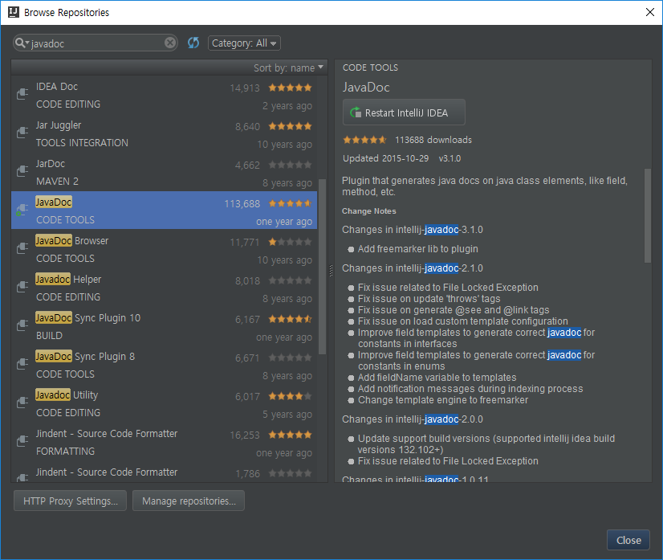
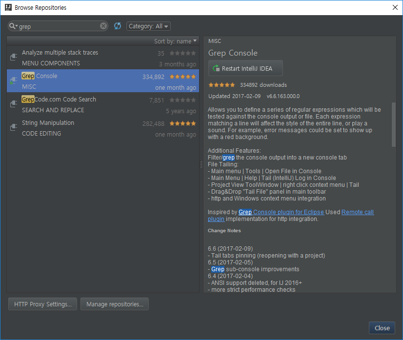

IntelliJ IDEA 16.3 기본 설정
Memory Heap Size 수정
C:\Program Files (x86)\JetBrains\IntelliJ IDEA 2016.3.5\bin\idea.exe.vmoptions
파일을 열어 general memory policy를 수정한다.
-Xms256m
-Xmx750m
Please note that very big Xmx and Xms values are not so good. In this case, GarbageCollector has to work with a big part of memory at a time and causes considerable hang-ups. On the other hand, too small values can lead to the OutOfMemory exception. The specified values provide enough memory and at the same time the GarbageCollector works often but rather fast. https://blog.jetbrains.com/idea/2006/04/configuring-intellij-idea-vm-options/
File encoding
Settings 에서 file encoding을 UTF-8로 설정한다.
Transparent native-to-ascii conversion를 체크한다.
이 옵션은 \\0A과 같은 escape들이 한글이나 ASCII로 보일 수 있도록 해주는 옵션이다.
To have the special mode turned on when symbols are stored in a properties file as escape sequences but displayed as normal letters, check the option Transparent native-to-ascii conversion. This option is helpful when the properties files are encoded in ISO 8859-1. It is recommended to use this approach, if you don’t have any special reasons to change encoding. https://www.jetbrains.com/help/idea/2016.1/configuring-encoding-for-properties-files.html?origin=old_help
Plugins
JavaDoc
Ctrl + Alt + Shift + G 로 JavaDoc을 만들 수 있다.

GrepConsol
콘솔로그에 색 입히기

Back & Recovery
아래 사용자 폴더에 설정 정보 및 플러그인을 저장하고 있다.
C:\Users\{계정명}\.IntelliJIdea2016.3
config : 개인 설정 정보
system : 설치된 플러그인
- config/idea.key 는 개인 라이센스 key 이므로 배포 시 주의